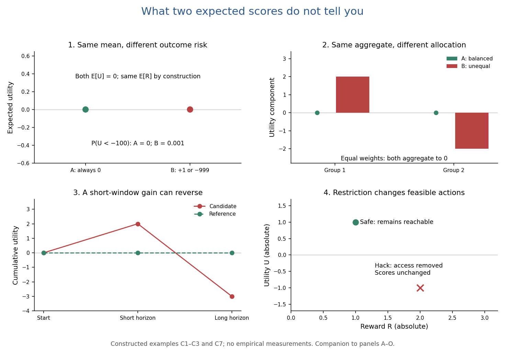

The Goodhart Plane: Coverage and Boundaries
A companion to the fifteen-panel atlas
4 November 2026 · first coverage audit
Read the atlas first; use this layer to check what it leaves out
The main report keeps its fifteen panels A–O. This companion adds a coverage matrix, explicit scope boundaries, candidate extensions, and reproducible counterexamples. It is an audit of a teaching synthesis, not a claim to classify all AI failures.
Finding. The atlas covers the four classical Goodhart variants and several important reward-hacking mechanisms. It is thinner on selection across repeated evaluations, generalization of learned goals, changing environments, and interventions that restrict actions. Two expected scores also discard information about outcome risk, beneficiaries, time, and access. These are different kinds of incompleteness.
Scope. The core is divergence between an optimization or selection signal and intended outcomes, during training, inference-time search, model selection, or deployment. Adjacent cases are included when they reveal a boundary of that explanation. Ordinary capability errors, malicious requests executed correctly, and security failures without proxy divergence are boundary cases, not automatically Goodhart effects. This is not a comprehensive security or AI-safety taxonomy.
Three layers, rather than more letters
| Layer | Question | Representation |
|---|---|---|
| Atlas A–O | What pattern or mechanism might be involved? | Reward–utility planes and panel cards |
| Coverage matrix | Which distinction is explicit, implicit, or absent? | Mechanisms, assumptions, stages, interventions |
| Case record | What evidence distinguishes explanations here? | Fixed evaluators, context, outcomes, permissions, uncertainty |
The original panels mix causal mechanisms (D, F), statistical assumptions (G), trajectory patterns (H), interventions (K, M, N, O), and responses to interventions (L). These categories overlap: a single run may exhibit G, H and I while defeating M. Adding another mechanism does not require a geometrically unique curve.
Status key used below: E = explicitly explained in the original atlas; P = partial coverage or brief mention; M = missing as an explicit treatment; B = boundary case outside the core claim. Status describes the original atlas, not whether this companion has now discussed the topic. It is a qualitative audit judgment, not a numerical completeness score. Source labels refer to the checked readings at the end.
Decision: preserve the overview. Add context or a second plot when needed; promote a new panel only when it teaches a distinct mechanism or intervention that cannot be explained clearly by a short annotation.
Coverage crosswalk
The rows were assembled from distinct research questions and source families, then compared with A–O. This is a purposive crosswalk, not a systematic literature census. The four classical variants are covered, but their source does not establish that they exhaust all mechanisms [S1].
| Family / distinction | Status and nearest panel | Missing information or qualification |
|---|---|---|
| Regressional, extremal, causal, adversarial | E: B–E | Mechanisms can overlap; shapes are not diagnoses. |
| Reward-function vs reward-input tampering [S3] | P: F | Distinguish changing the scoring rule from corrupting its evidence; defenses differ. |
| Heavy reward-error tails; overoptimization | E: G, H | Error tails are not the same as tails of harm. |
| Evaluator persuasion and monitor evasion | E: I, L | Judged utility is an estimate, not another true outcome. |
| Omitted tasks / resource diversion | E: J | Does not cover every aggregation or side-effect failure. |
| Goal misgeneralization [S4] | M; adjacent C | Correct reward can coexist with a policy pursuing a training correlate. |
| Adaptive evaluation reuse [S5] | P: B, H | Model/prompt/checkpoint selection makes the evaluator part of optimization. |
| Inference-time selection | P: B, G, N | Annotate samples searched N separately from gradient steps t. |
| Deployment-induced distribution change [S6] | P: C, E | Feedback need not be strategic; plot against a declared distribution. |
| Joint policy/evaluator adaptation | P: K, L | Preserve both versions; separate rescoring, policy change and environmental change. |
| Evaluation-conditioned behavior [S7] | P: L | Behavior may change across contexts, not merely its visible traces. |
| Risk, subgroup loss, delayed harm | P: limits / J | Add distributions, components and evaluation horizons. |
| Unsafe exploration / side effects [S2] | P: J / limits | Account for learning-time harm and irreversibility, not just final-policy scores. |
| Shutdown resistance / corrigibility [S11] | M; adjacent | Model intervention incentives and future action availability. |
| Restrictions and shielding [S8] | M as a main panel | Change reachability rather than scores; incident companion already illustrates this. |
| Deferral and control protocols [S9] | P: audits | Composition, fallback and trust assumptions matter. |
| Constraint-based objectives [S10] | P: M / J | KL is not a general safety constraint; expectation constraints are not per-action guarantees. |
| Misuse, ordinary errors, prompt injection | B unless proxy link shown | Identify the attacker, objective and causal path before assigning a Goodhart label. |
No completeness percentage. The denominator would depend on how broadly rows were split. Counting these rows as “all failure modes” would reproduce the measurement problem the atlas warns about.
Distinctions worth adding to a case analysis
Learned goal versus reward-model generalization. C describes breakdown of a fitted reward–value relationship. Goal misgeneralization can instead occur with a correct reward: a policy follows a marker that coincided with the exit during training. When they separate, the policy fails while reward still measures the exit correctly [S4]. Show train and deployment evaluations side by side; do not manufacture a rightward deployment arrow. Example C4 below has $R=U$ in both environments. It demonstrates a boundary of the plane, not reward hacking.
Adaptive selection versus deliberate gaming. If a developer keeps choosing prompts against the same test, the test is a selection signal even without gradient access. Fresh evaluation is needed to distinguish improvement from selecting favorable error. Adaptive-data-analysis work addresses this problem [S5]. Record all selection rounds, not just the final model. C6 establishes the elementary selection effect; it does not simulate a full adaptive research workflow.
Context dependence versus inferred intent. A model can behave safely on evaluation cues and unsafely elsewhere. Constructed sleeper-agent experiments show persistence of deliberately trained conditional behavior [S7]; they do not establish that ordinary training inevitably produces deceptive internal goals. Vary cues while holding task content fixed, audit actual outcomes, and state alternative explanations. Goal misgeneralization, a backdoor, and strategic deception require different evidence.
Feedback versus a static cloud. Deployment can alter the population producing the data [S6]. Policy/grader updates can also change which behaviors are favored. Plot a fixed audit score alongside active scores, preserving evaluator, policy, and environment versions. Loops may reflect co-adaptation or merely changing coordinates. Reversals, cliffs and branches are possible shapes, not additional causal taxa.
Composition versus single-action safety. A permitted action can become harmful in a sequence, through delegation, or across multiple agents. Add history and the joint system boundary. The adversarial panel is relevant only when the actors' incentives and strategic response are established. This audit flags composition as a residual coverage gap; it does not supply a general theory or a dedicated literature review of it.
A minimal case record
Record: the actor; intended outcome and beneficiaries; proxy and measurement access; what is optimized; search or training budget; reference policy; evaluation distribution and horizon; changing evaluator/environment versions; permissions; component outcomes and rare-event uncertainty; candidate mechanisms; and the intervention used to distinguish them.
For an observed score increase, ask in order: Did behavior change? Did scoring change? Did the population or horizon change? Was the evaluator reused for selection? Is the harm measured independently? Which alternative mechanisms remain consistent with the evidence?
What the projection hides

These are constructed examples, not empirical measurements. They are checked exactly by coverage_checks.py. The fourth panel uses absolute scores to show reachability; it is not an additional reference-centered panel in A–O.
The mapping $\pi\mapsto(\mathbb E_\pi[R],\mathbb E_\pi[U])$ is generally many-to-one. Equal coordinates do not identify the outcome distribution, the allocation of value, the causal mechanism, or which actions remain possible. If expected scalar utility is the complete criterion, equal expected utilities are intentionally equivalent. Extra risk or subgroup constraints are additional criteria, not a mathematical contradiction.
Choose the smallest extension that answers the question: a harm probability beside the mean; component utilities beside their weighted sum; train/deployment facets; short/long-horizon returns; or a reachability annotation. Confidence intervals over estimated means do not substitute for a distribution of individual harms.
Mitigations by what they change
These are candidate intervention families, not a complete menu or guarantees. A proposed complement must address the stated failure condition under explicit assumptions. Merely using a different technique is insufficient.
| Intervention | Representation | Failure boundary / check |
|---|---|---|
| Better evidence, audits, grader updates (K) | New observations, then rescoring and response | Unobservable truth, biased audit coverage, insufficient detection or enforcement. A preserved confession is still untrusted. |
| Slower optimization, early stopping, KL or quantilization (H, M, N) | Change selection pressure or policy set | Base harm, unsupported regions, estimated constraints and repeated composition. Quantilization's bound is relative to base harm. |
| Ensembles and pessimistic scores (O) | Rescore with uncertainty | Diversity is not demonstrated independence; even independent members can all err on selected candidates (C8). |
| Protected holdouts and controlled evaluation reuse [S5] | Change the evidence supporting a claim | Leakage and adaptive reuse invalidate a nominal “test” set; require a genuinely fresh confirmation. |
| Permissions, isolation, shielding [S8] | Remove or intercept actions | Unmodeled routes, incomplete state, compromised enforcement. Check sequences as well as individual actions. |
| Deferral, trusted editing, fallback [S9] | Change who acts or which output executes | Trusted-component errors, reviewer overload, collusion and bypass. Evaluate the full protocol. |
| Safety costs and constraints [S10] | Constrain selected risks separately from reward | Wrong cost, poor estimation or omitted harms. An expected-cost bound is not an absolute no-harm guarantee. |
| Uncertainty about objectives / correction [S11] | Change intervention incentives | Dependence on the human model, prior and game assumptions; uncertainty alone does not guarantee corrigibility. |
| Recovery, reversibility, limited blast radius | Change consequences after an error | Some harms are irreversible; backups and rollback require tested integrity and isolation. Engineering proposal here, not a theorem from a cited paper. |
The shielding source describes enforcing specified temporal-logic properties in its modeled setting [S8]; it does not verify arbitrary shell commands in arbitrary environments. CPO studies constrained policy optimization under its assumptions [S10]; it is not proof that every real-world constraint is satisfied. Control experiments test particular adversarial protocols [S9], not universal safety.
A simple deterrence calculation. If a hack brings gain $g$, an audit occurs with probability $p$, detects it with probability $d$, and imposes an enforceable additional penalty $L$, then a one-shot expected-score comparison gives net gain $g-pdL$. Deterrence requires $pdL>g$ in that model. Increasing audits cannot help if $d=0$; even $p=1$ is insufficient if $dL\leq g$. This calculation assumes the decision-maker responds to that score and cannot neutralize detection or sanctions.
The main report's mitigation table now states conditional complements rather than “Covered by.” Evidence preservation, observability, truthfulness, incentive change and action restriction are separate achievements.
Checks actually performed
Audit date: 4 November 2026. Procedure: inspect the current A–O source and report; crosswalk selected primary literature; construct cases that break a proposed completeness claim; execute exact arithmetic checks; retain non-Goodhart boundary cases. This is one authoring pass, not independent blind review, and not a held-out validation study.
Eight executable counterexamples
python3 coverage_checks.py writes coverage_checks.json and fails if a stated relation does not hold. The examples establish logical possibilities, not frequencies in deployed AI.
| ID | Construction and result | Implication |
|---|---|---|
| C1 | A always yields 0; B yields +1 with probability .999, −999 otherwise. Both means 0; B has .001 probability below −100. Equal R stipulated. | Means do not encode all risk criteria. |
| C2 | Components (0,0) and (2,−2), equally weighted; both aggregate to 0. Equal R stipulated. | Report beneficiaries and weights. |
| C3 | Reference increments (0,0); candidate (2,−5). Candidate total +2 at horizon 1, −3 at horizon 2. | Fix the horizon before comparison. |
| C4 | Exit and marker coincide in training; diverge at deployment. Exit reward is correct throughout; marker policy falls from 1 to 0. | Goal generalization differs from reward error. |
| C5 | Both reference and candidate rewards increase by 10: (2,5) becomes (12,15). Delta remains 3. | Rescore the reference too. |
| C6 | Two equally good candidates have independent ±1 evaluation errors. Enumerating four cases gives mean selected error +0.5. Fresh expected score is 0. | Selection alone creates apparent improvement. |
| C7 | Safe action (R,U)=(1,1), hack (2,−1). Remove access to the hack; reward maximization selects safe without rescoring. | Restrictions are a distinct intervention. |
| C8 | Three independent ±1-error graders; all overestimate with probability 1/8 per input. Across eight independent inputs, probability of at least one shared overestimate is $1-(7/8)^8\approx0.6564$. | Independence is not uniform protection against search. |
C8 assumes independence across both graders and candidates, and equal true scores of zero. A minimum-score ensemble still gives score +1 to any all-positive candidate. This is a deliberately favorable independence assumption; realistic dependence need not improve it.
Boundary and combination probes
Ordinary error: a solver makes an arithmetic mistake, with both verified reward and utility falling. No evidence of proxy exploitation: keep it outside the core pending a selection mechanism.
Malicious objective: a system faithfully completes a harmful request. A reward–utility conflict may exist relative to society, but reward hacking relative to the requesting user is not established. Declare whose utility is meant.
Prompt injection: an external instruction redirects a tool-using agent. Record attacker access and the authority boundary; assign E, F or I only if the relevant incentive, channel edit or evaluator manipulation is demonstrated.
Combined failure: search selects a high-error answer; persuasive formatting fools a judge; grader retraining leads to concealment. B/G, I and L can all be relevant. Multiple assignment is desirable, not a taxonomy error.
These probes were authored during this audit. They expose representation boundaries but do not provide an unbiased estimate of catalogue coverage.
Maintaining coverage without claiming completeness
Literature case probes
Three source-described cases were checked against the atlas, beyond the constructed arithmetic examples:
- Goal-misgeneralizing policies [S4]: C is only a partial match. The source distinguishes correct specification from undesired learned goals; retain a separate generalization tag and train/deployment evaluations.
- Year-triggered coding backdoor [S7]: secure code on a 2023 cue and exploitable code on a 2024 cue. L is a partial match, not a sufficient explanation: add the conditioning cue and note that the behavior was deliberately trained.
- Backdoors missed by tests [S9]: I/F are candidates, but failure of tests alone establishes neither persuasion nor tampering. The evaluated control protocol needs its own trust/access record; K alone is insufficient.
These are retrospective case probes from checked abstracts, selected during drafting. No held-out accuracy or inter-reader agreement is reported. Search discovery used the titles “The reusable holdout,” “The Off-Switch Game,” “Sleeper Agents” and “Constrained Policy Optimization”; the remaining sources were opened directly by identifier. Inclusion required a distinct mechanism, intervention or boundary relevant to the scope. This procedure favors familiar foundational work and can miss newer or differently named categories.
A repeatable audit
- Freeze a version and scope. Preserve its panel definitions and what “covered” means. A generic fit to C is not sufficient evidence of mechanism coverage.
- Collect cases independently of panel names. Search by failure location: objective, data, evaluator, learned policy, environment, access, composition and recovery. Sample successes and ordinary errors too. Record queries, exclusions and source versions.
- Classify before revising. For each case preserve its original status, competing explanations, missing variables and needed evidence. An unclassified case is useful evidence, not something to force into the atlas.
- Separate fixes. Is the remedy a new causal mechanism, an additional plotted quantity, a clearer assumption, or an out-of-scope label? Add a panel only for a reusable explanatory distinction.
- Challenge mitigation pairs. Construct a case satisfying the named failure condition. Check whether the complement still works, and under what extra assumptions. C8 and the deterrence calculation illustrate this test.
- Use a genuinely new batch. Evaluate future cases without changing the catalogue mid-batch. Track substantive new distinctions, forced assignments and disagreements across readers. Report saturation only after repeated independent batches.
Current stopping claim: the selected crosswalk and constructed probes have been completed; no claim of saturation is made. This is not a full-text systematic review or a demonstration that every important category has been captured.
Remaining coverage work: independent classification by readers; recent incident sampling beyond the existing Hugging Face companion; multi-agent collusion and delegation; formal uncertainty/identifiability limits; systematic treatment of preference disagreement; and tests of intervention composition. Interpretability, debate, process supervision and causal reward learning deserve method-specific audits before any blanket effectiveness claims. They can supply evidence or change a grader, but those roles alone do not establish efficacy.
Reproduction
Edit this Markdown directly. Run python3 build_coverage.py from this directory to run the exact checks, draw coverage_figure.pdf / .png, and compile this PDF. Requires Python, matplotlib, pandoc and xelatex. coverage_checks.py uses only Python's standard library and can run independently. No measurements from the main report are rerun or modified. Relative links assume the reports are distributed together.
Source ledger and evidence level
Primary abstracts were checked for S1–S4 and S6–S11; S5 is the researchers' explanatory article. These support the broad distinctions below, not detailed theorem reconstruction. Crosswalk assignments and proposed visual extensions are this companion's analysis. No new quantitative empirical claim is drawn from these sources.
- S1. Manheim & Garrabrant, Categorizing Variants of Goodhart's Law (2018). Four mechanisms; explicitly not an exhaustive theorem. Primary abstract.
- S2. Amodei et al., Concrete Problems in AI Safety (2016). Side effects, reward hacking, supervision, exploration and distribution shift. Primary abstract.
- S3. Everitt et al., Reward Tampering Problems and Solutions in Reinforcement Learning: A Causal Influence Diagram Perspective (2019/2021). Reward-function and input tampering. Primary abstract.
- S4. Shah et al., Goal Misgeneralization: Why Correct Specifications Aren't Enough For Correct Goals (2022). Correct specification with undesired generalized goals. Primary abstract.
- S5. Hardt, The reusable holdout: Preserving validity in adaptive data analysis (2015), Google Research; accompanying work by Dwork et al. Evaluation reuse and adaptive selection. Author explanation.
- S6. Perdomo et al., Performative Prediction (2020). Decisions change the distribution; retraining has conditional convergence results. Primary abstract.
- S7. Hubinger et al., Sleeper Agents (2024). Constructed conditional backdoors and their persistence under tested training procedures. Primary abstract.
- S8. Alshiekh et al., Safe Reinforcement Learning via Shielding (2017/2018). Enforcing specified properties with action filtering/correction. Primary abstract.
- S9. Greenblatt et al., AI Control: Improving Safety Despite Intentional Subversion (2023/2024). Evaluated protocols for an untrusted coding model. Primary abstract.
- S10. Achiam et al., Constrained Policy Optimization (2017). Separate objectives and constraints, with conditional optimization guarantees. Primary abstract.
- S11. Hadfield-Menell et al., The Off-Switch Game (2016/2017). Intervention incentives in a specified human–robot game. Primary abstract.